Bollettini neve · Alpi
Alpi: Dove è caduta più neve fresca sulle Alpi? Nelle ultime 72 ore La Grave ha ricevuto 41 cm di neve nuova, e 31 cm sono caduti nelle ultime 24 …
La neve per paese oggi
I paesi più bianchi oggi: Svizzera (72 %), Austria (54 %) e Italia (32 %).
Più neve fresca nella settimana: Slovenia (39 cm), Francia (33 cm) e Italia (32 cm).
La neve oggi nelle grandi stazioni
- La Grave · 158 cm
- Orelle · 154 cm
- Val Thorens · 154 cm
- Val Thorens · 149 cm
- Les Deux Alpes · 120 cm
- Alpe d'Huez Grand Domaine · 114 cm
- Espace Haute Maurienne Vanoise · 90 cm
- Les Arcs · 86 cm
- Anzère · 85 cm
- Bonneval-sur-Arc · 84 cm
- Le Grand Domaine · 83 cm
- Glacier 3000 · 82 cm
- La Rosière · 82 cm
- Les Trois Vallées · 82 cm
- Les Grands Montets · 80 cm
- La Thuile ski · 78 cm
- Les Ménuires · 76 cm
- Paradiski · 75 cm
- Courmayeur · 74 cm
- Ovronnaz · 74 cm
- Brévent/Flégère (Chamonix) · 73 cm
- Courchevel · 69 cm
- Méribel · 69 cm
- Saint François Longchamp · 69 cm
Les Deux Alpes: quanta neve fresca è caduta? 38 cm in 72 ore (15 novembre)
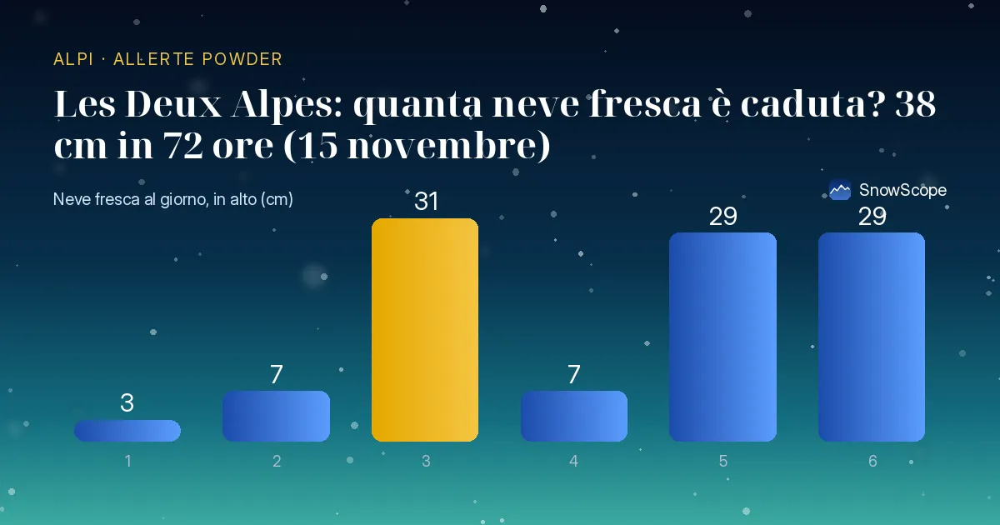
Dove è caduta più neve fresca sulle Alpi? Nelle ultime 72 ore La Grave ha ricevuto 41 cm di neve nuova, e 31 cm sono caduti nelle ultime 24 ore. Così restano circa 97 cm sui pendii superiori. La neve nuova in una mattina fredda è leggera; nel pomeriggio, su un pendio al sole, è un materiale diverso.
Neve fresca, posto per posto
Anche altre località sono andate bene: Les Deux Alpes, Alpe d'Huez Grand Domaine e Crévoux hanno avuto 38 cm, 37 cm e 37 cm nelle ultime 72 ore.
In tutta la regione oggi 851 località su 1.178 sulle Alpi hanno neve in alto, e SnowScope trova 63.570 km² di terreno bianco.


Skipass giornalieri alpini da 36 EUR: nove stazioni confrontate per prezzo, chilometri di piste e neve che offrono di solito, per trovare la miglior giornata di sci in rapporto al prezzo.

Sci sul ghiacciaio da 68 EUR al giorno: abbiamo confrontato sette ghiacciai in Francia, Austria, Germania e Svizzera per prezzo e per la neve che di solito trattengono a dicembre.

Sei giorni di sci da 191 EUR: abbiamo classificato dieci settimane sugli sci low cost in Europa per prezzo, poi abbiamo controllato 46 inverni passati per capire dove la neve è affidabile.

Da 20 EUR per un weekend di apertura a skipass da 6 giorni prima di Natale: un calendario delle offerte sci più economiche di inizio stagione nelle Alpi per il 2026, con la neve che puoi aspettarti.

A Andermatt (2963 m) la previsione indica 75 mm di precipitazioni dal 15 novembre al 20 novembre. Nelle ore di pioggia lo zero termico è vicino a 2160
Les Deux Alpes: quanta neve fresca è caduta? 38 cm in 72 ore (15 novembre). Dove è caduta più neve fresca sulle Alpi? La Grave ha ricevuto 41 cm di …

Krvavec a mezza montagna ha 13 cm di neve tipica il 15 dicembre in 46 inverni, ma terreno nudo in 11 di loro. Giornaliero EUR 47.

Scia su 157 km di piste mappate a Serre Chevalier, dove la cima della montagna ha una probabilità del 100 % di avere neve entro metà dicembre.

Turracher Höhe ha 23 cm a mezza montagna il 15 dicembre tipico, ma solo il 39% degli inverni raggiunge 30 cm lì a metà dicembre. Dati dal 13 novembre 2026.

Hochkar a mezza montagna ha 38 cm in un 15 dicembre tipico, e il 63 % degli inverni ha avuto 30 cm o più in quella settimana. Skipass giornalieri da EUR 32,90 in giorni tranquilli.
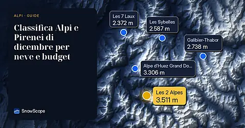
Dieci stazioni sciistiche europee classificate per il valore di dicembre, guidate da Les 2 Alpes con 75 cm di neve a metà montagna.
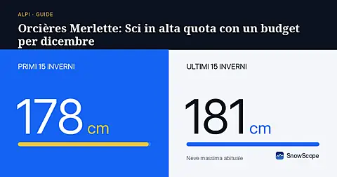
Orcières Merlette offre una base elevata a 1.826 m e uno skipass di 6 giorni da 227 EUR, rendendolo una scelta affidabile per una vacanza sulla neve a dicembre.

Alpe d'Huez merita per dicembre 2026? Controlliamo le probabilità di neve, il prezzo di partenza di 58,00 EUR e confrontiamo con Les 2 Alpes.

Gli skipass sloveni sono i più economici (Krvavec 205 EUR per 6 giorni), ma lì la neve naturale di dicembre è rara; Lachtal, Hochkar e il ghiacciaio della Möll fanno meglio.

Lachtal costa 62 EUR al giorno e i bambini sotto i 7 anni sciato gratis. A metà montagna ha avuto 30 cm o più nel 72 % dei diciembri dalla metà del mese in poi. Profondità della neve l'13 novembre 2026.
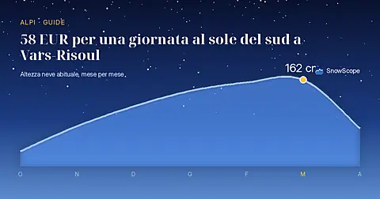
Scia sui 131 km di piste della Forêt Blanche questo dicembre con uno skipass di sei giorni a 298 EUR.

Al Monterosa Ski lo skipass giornaliero online va da 40,00 a 71,00 EUR. A dicembre la neve è in quota: 124 cm abituali a 3.030 m, 6 cm a 1.207 m.

Il 15 dicembre a Fellhorn/Kanzelwand: 63 cm in cima a 1965 m, 30 cm a mezza montagna, solo 10 cm alla base a 918 m. Pianifica di conseguenza.
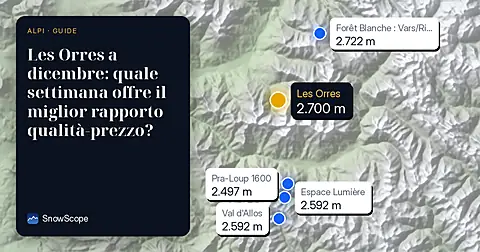
Pianifica il tuo viaggio a Les Orres nel dicembre 2026 confrontando i prezzi dei pass settimanali con il nostro storico della neve di 46 inverni passati.

Pitztaler Gletscher mantiene meglio di molte stazioni alpine la neve di dicembre: 87 cm a media quota a metà dicembre, con ogni inverno recente sopra 30 cm. Dati 13 novembre 2026.
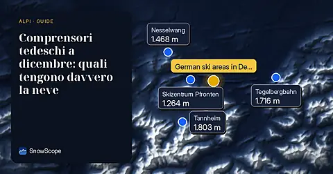
Solo Zugspitze e l'alto Fellhorn mantengono in modo affidabile 30 cm a metà dicembre. Le colline bavaresi più basse offrono skipass più economici ma probabilità di neve molto inferiori. Dati dal 13 novembre 2026.

Puy-Saint-Vincent offre uno skipass giornaliero adulto a 44 EUR con buona neve a dicembre in quota, confrontato qui con il grande vicino Serre Chevalier.

Grimentz-Zinal offre 71 km di piste e una neve sicura in alta quota per il tuo viaggio di dicembre, con skipass di 6 giorni a CHF 339,00.

Austria prima di Natale: Galtür 258 EUR e Kühtai 269 EUR per 6 giorni, con 30 cm in oltre il 90 % degli inverni; i ghiacciai costano di più, le piccole stazioni sono un azzardo.

Classifichiamo le stazioni sciistiche francesi in base alle probabilità di neve a dicembre e ai prezzi dei pass, partendo da 36,00 EUR per un pass giornaliero adulto a Les Karellis.

La mezza montagna di Galtür tiene 55 cm il 15 dicembre in un anno tipico. Gli skipass di bassa stagione costano EUR 55,50 fino al 18 dicembre. Dati da 46 inverni, 1980-81 a 2025-26.
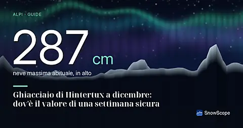
Il 15 dicembre a 3245 m, Hintertux ha 98 cm di neve in 46 inverni di storia. Ogni inverno ha avuto 30 cm o più nella settimana prima di Natale lassù.

Confronta le probabilità di neve a dicembre e i prezzi verificati degli skipass a partire da 40,00 EUR nelle aree sciistiche italiane per la tua gita in auto nel weekend.

La base di Kühtai a 1939 m rimane innevata in modo affidabile a dicembre. Il 15 dicembre típicamente 60 cm in base, 72 cm a metà montagna, 112 cm in vetta. Stagione bassa: lo skipass di 6 giorni a EUR 269 fino al 18 dicembre.

Les 2 Alpes raggiunge i 3.511 m per neve abbondante a dicembre 2026, con un skipass adulti di 6 giorni a 266,50 EUR.

Les Karellis offre 45 km di piste e uno skipass adulto di 6 giorni a 191,00 EUR con una probabilità del 98 % di neve a metà montagna a fine dicembre.

Scia a Livigno per 51,50 EUR al giorno prima del 18 dicembre, quando la neve in cima raggiunge i 30 cm nel 100 % degli inverni passati.

Montgenèvre ha 56 cm di neve abituale a dicembre alla base, offrendo agli sciatori del weekend una copertura migliore rispetto a Sestriere, oltre il confine.

Sciare a Obertauern a dicembre: 43 cm in un tipico 15 dicembre a metà montagna, skipass 6 giorni a 331 EUR prima di Natale. Storico neve e prezzi.

Pila sopra Aosta offre uno skipass giornaliero fisso a 60,00 EUR e neve affidabile a dicembre sulle quote alte.
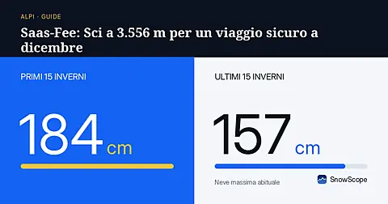
Gli impianti di Saas-Fee raggiungono i 3.556 m, dove la nostra storia della neve mostra che il 100 % degli inverni passati ha almeno 30 cm di neve entro metà dicembre.

Scopri le piste tranquille di St-Luc Chandolin, dove la neve a metà montagna ha raggiunto i 30 cm nel 98 % degli inverni a fine dicembre.

Valloire-Valmeinier offre 131 km di piste e il 98 % di probabilità di avere 30 cm di neve a metà montagna entro metà dicembre.

Il ghiacciaio Zugspitze ha 122 cm di neve tipica il 15 dicembre a 2627 m; la cima di Garmisch-Classic ne ha 57 cm. Stesso prezzo, copertura nevosa diversa. Dati da 46 inverni.

Mölltaler Gletscher a dicembre: 66 cm all'impianto più basso (2103 m) e 128 cm a metà montagna in un tipico 15 dicembre; 6 giorni in bassa stagione 332 EUR.

Un principiante prudente può fidarsi di Courmayeur a dicembre, quando la media a metà montagna è di 60 cm di neve nei nostri inverni passati?

La mappa delle piste di Sillian (Hochpustertal) con il nostro strato di neve il 13 novembre 2026: 8,6 cm in vetta a 2399 m, pendii bassi scoperti e una settimana di pioggia e neve miste con il limite verso 1.800-2.000 m.

Bollettino neve di Lech Zürs del 13 novembre 2026: circa 6 cm in vetta (2436 m) e a metà montagna, niente a Lech a 1430 m. Questa settimana 42 cm in alto secondo la nostra previsione, fino a 91 cm secondo altre, pioggia e neve mista intorno ai 1400 m. E perché Lech è il lato nevoso dell'Arlberg.
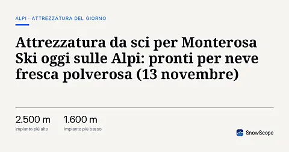
Cosa indossare, cosa portare e quando sciare, località per località. I consigli …

Dal 11 novembre la copertura nevosa è passata da 39.090 km² a 76.100 km²; il 16 novembre la previsione indica 57.910 km². Pfelders ha oggi il manto …

Bollettino neve di Obergurgl del 13 novembre 2026: circa 20 cm in vetta (3024 m), 5 cm a metà montagna, niente agli impianti più bassi (1784 m). Previsioni della settimana: 34 cm in alto, 21 cm in basso, quota neve intorno ai 1700 m. E il solito inizio di stagione.

Altezza neve a Sölden il 13 novembre 2026: circa 9 cm in vetta (3245 m), 5 cm a metà montagna, niente in valle a 1346 m. 25 cm previsti in alto questa settimana, pioggia sotto i 1620 m circa. Ghiacciaio contro paese, con 46 inverni passati.

Nevicate a Val Thorens, 13 novembre 2026: 27 cm caduti in vetta (3175 m) e 17 cm a 2498 m in sette giorni; l'altezza della neve è 50 cm e 8 cm. Prossimi sette giorni: 86 cm in vetta, 73 cm a 2498 m, limite delle nevicate ben sotto il paese. La stagione abituale da 46 inverni.
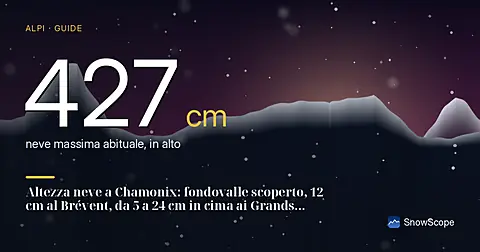
L'altezza della neve a Chamonix il 13 novembre 2026, quota per quota: niente sul fondovalle, 1 cm a 2001 m, 12 cm in cima a Brévent-Flégère (2486 m), da 5 a 24 cm in cima ai Grands Montets (2768 m). Circa un metro previsto in quota questa settimana, pioggia in valle. Quanta neve fa di solito a Chamonix, da 46 inverni.

Condizioni neve a Tignes il 13 novembre 2026: 42 cm in vetta (3447 m), 12 cm a 2503 m, fondovalle senza neve a 1559 m e 99 cm previsti in vetta in sette giorni, con pioggia sotto i 1700 m circa. Il confronto con 46 inverni passati.

Neve fresca a La Grave: 61 cm nelle ultime 72 ore, compresi 3 cm nelle ultime 24. SnowScope neve ora mette circa 78 cm sui pendii superiori. …
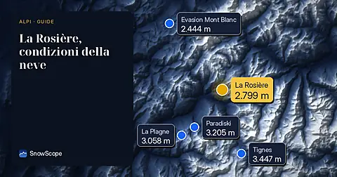
La Rosière in vetta mantiene 24 cm l'11 novembre; i prossimi sette giorni prevedono 108 cm a 2799 m, 61 cm a media montagna.

Alpe Devero ha 2 cm a 2201 m il 12 novembre. La settimana in arrivo porterà 36 cm in vetta, 24 cm a mezza montagna e 21 cm a valle.
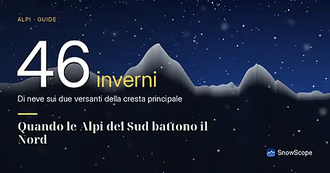
In 24 inverni su 46 le località del versante italiano e delle Alpi meridionali francesi hanno avuto un inverno relativamente più ricco del versante nord. Il grafico, le grandi annate e il tempo che le ha prodotte.
A dicembre la neve dipende prima di tutto dalla quota. 46 inverni passati in 676 stazioni delle Alpi mostrano quanta neve aspettarsi il 1°, il 15 e il 22 dicembre, da sotto i 1.200 m a oltre i 2.400 m.

Un piano economico di 3 giorni sul Lago di Como a dicembre con i prezzi reali 2026-27: treni, battelli, funicolare e sci ai Piani di Bobbio o a Madesimo, quanto si risparmia rispetto a Cortina e le probabilità di neve a Natale.

La neve di oggi a Livigno, cosa dice la previsione stagionale europea per dicembre e perché a Natale la quota vince su un mese caldo.

La neve di oggi a Cortina, la previsione stagionale europea per dicembre e le nostre probabilità di un Natale bianco nelle Dolomiti orientali.

Previsioni Dolomiti dicembre 2026: più caldo di 1,7 °C, leggermente più umido, 30 cm di neve entro fine anno, Natale bianco a media quota. Dati del 10 novembre.

Dicembre nelle Alpi Meridionali sarà più caldo e più umido del solito, ma la profondità della neve a fine anno dovrebbe rimanere vicina alla norma. Analisi SnowScope dell'11 novembre 2026.

Chamonix inizia dicembre con 27 cm in quota ma neve sottile più in basso. Il caldo e l'umidità si contrappongono; aspettarsi neve dicembrino quasi normale. Dati del 10 novembre 2026.

Zermatt in cifre: dove la neve resiste, i mesi più sicuri e come raggiungere il paese senz'auto, da 46 inverni passati.

Verbier va bene per i principianti? Quando la neve è migliore? Come si arriva? Risposte sulle 4 Vallées e su 46 inverni passati.

Il Sellaronda da Selva (Sëlva) in Val Gardena: passi Gardena, Campolongo, Pordoi e Sella in ordine, con il nostro storico neve di 46 inverni passati.

Val d'Isère e l'Espace Killy per principianti, sciatori intermedi ed esperti, con la neve di 46 inverni passati a tre quote.

Kitzbühel è famosa e bassa. Che cosa dicono 46 inverni passati della neve a 762 m, 1.377 m e 1.993 m, che cosa è cambiato e quali settimane sono la scommessa più sicura.

Dieci punti pratici per una vacanza sugli sci a Livigno: le strade, il freddo, i negozi duty-free, i due versanti e il periodo migliore per la neve, da 46 inverni passati del nostro storico.
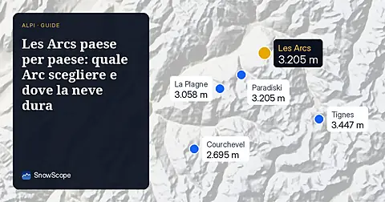
Les Arcs ha quattro villaggi a quote diverse, ognuno con la sua profondità di neve e il suo carattere. Scegli quello giusto per il tuo inverno.

Dai contadini walser al Weißer Ring: le date che hanno fatto Lech Zürs, poi il nostro storico della neve allora e oggi, i primi quindici di 46 inverni passati contro gli ultimi quindici.
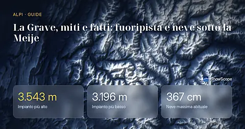
Cosa è vero di La Grave, la montagna del fuoripista sotto la Meije: terreno, sicurezza, neve per mese e tendenza, da 46 inverni passati.

Sette giorni nella Silvretta Arena, uno alla volta: dove è la neve, quando passare a Samnaun e che cosa dicono 46 inverni passati della neve di Ischgl a tre quote.

Saas Fee si trova a 1.780 m in un villaggio senza auto. Raggiungerlo in treno fino a Visp e poi PostBus 511, oppure in auto attraverso il Lötschberg, il Furka, il Sempione o la valle del Rodano. Dati dell'8 novembre 2026.

Alpe d'Huez guarda il sole. Come organizzare la giornata per ora e quota, con la neve di 46 inverni passati dai villaggi bassi al Pic Blanc.

La nostra serie di 46 inverni sulle Alpi, 108 punti da 667 a 3.872 m: meno giorni di neve ovunque, in modo netto nell'81 %. Cosa è cambiato e perché.

Bonneval-sur-Arc si trova a 1.794 m nella valle dell'Arc, chiusa dal Col dell'Iseran in inverno. Lo spessore di neve varia da 99 cm in basso a 335 cm in alto. Dati da 46 inverni passati, novembre 2026.

Come passare una prima giornata di sci a Chamonix, dai Grands Montets sopra Argentière al momento giusto per ogni pendio, con 46 inverni di dati sulla neve.

Cortina d'Ampezzo in tre modi: Tofana, Faloria-Cristallo e Cinque Torri-Lagazuoi, con 46 inverni di dati sulla neve a tre quote.
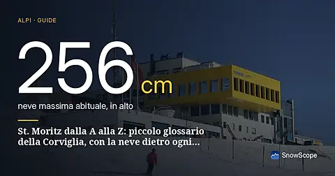
Chantarella, Marguns, Piz Nair, White Turf: le parole che si sentono a St. Moritz, spiegate, e cosa dicono 46 inverni passati del nostro storico neve su ogni quota della Corviglia.

Davos e Klosters condividono sei montagne dello sci. Un piano giorno per giorno, partendo dal Parsenn, con quello che 46 inverni passati del nostro storico dicono delle sue quote.

Quando prenotare Courchevel e le 3 Vallées, quale paese scegliere e dove la neve resiste, da 46 inverni passati.

St. Anton e Ski Arlberg lungo l'inverno: l'altezza neve abituale ogni mese a tre quote, da 46 inverni passati.
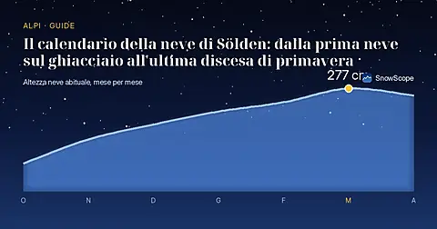
Un anno di neve a Sölden, fase per fase: quando i ghiacciai si imbiancano, il weekend di Coppa del Mondo, il cuore dell'inverno e le settimane di primavera, da 46 inverni passati a tre quote.
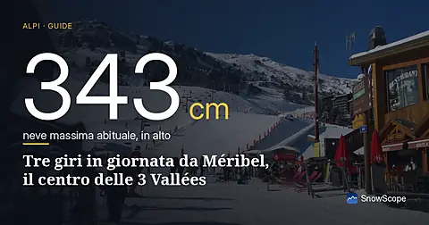
Tre modi di passare una giornata da Méribel: a est verso Courchevel, a sud verso Val Thorens, o in casa sul Mont Vallon, con la neve di 46 inverni passati a tre quote.
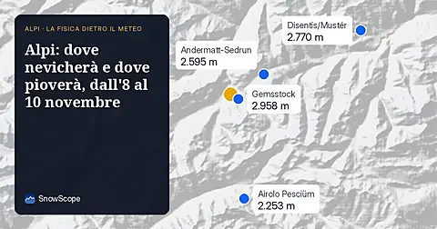
Quota neve prevista 2.190–2.850 m dal 8–10 novembre. I pendii alti ricevono neve; le valli restano bagnate. Dati dell'7 novembre.

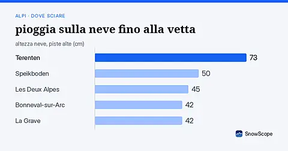
Terenten ha 73 cm sui versanti superiori al 4 novembre; il livello di congelamento raggiungerà 2.970 m il 5 novembre, portando pioggia alla vetta a 1.381 m.
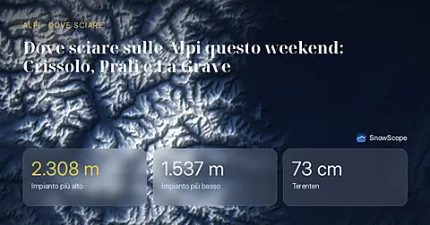
Abbiamo combinato l'altezza neve di oggi, la neve fresca delle ultime 72 ore e la previsione per scegliere Crissolo, Prali e La Grave. Tra queste …